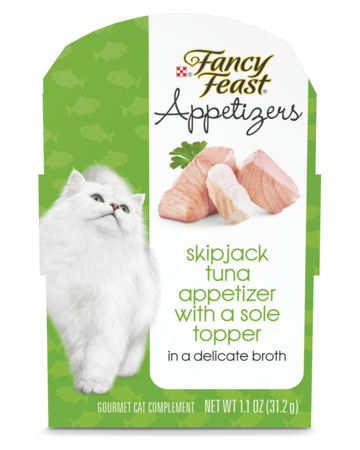

Wyngz The Cat eats like royalty. She not only snubs the cheaper foods but her favorites are of course the more expensive brands. Above this are pictures of her favorite dry foods. One is chicken and turkey with egg. The other is angus beef and wild boar. Her chicken food bag costs around $24.00 per bag weighing in at 4lbs of food. The red bag is $29.00 per 4lbs bag.
If it didn't sound crazy enough with wyngz's taste on dry food, her favorite wet foods are also trendy cat foods. She is only allowed one tray of Fancy Feast skipjack tuna and sole topper per the feeding guidelines on the box, though this one is her favorite. So of course the one which you need to limit her on is her meowing begging favorite. She will always ask for a second serving with her meows she tries to convince you. Her other favorite wet food is Fussie Cat tuna and shrimp. I try to have her eat more wet food because it is healthier for her but she eats maybe one can every other day. I would feed her more but she likes to space it out it seems.